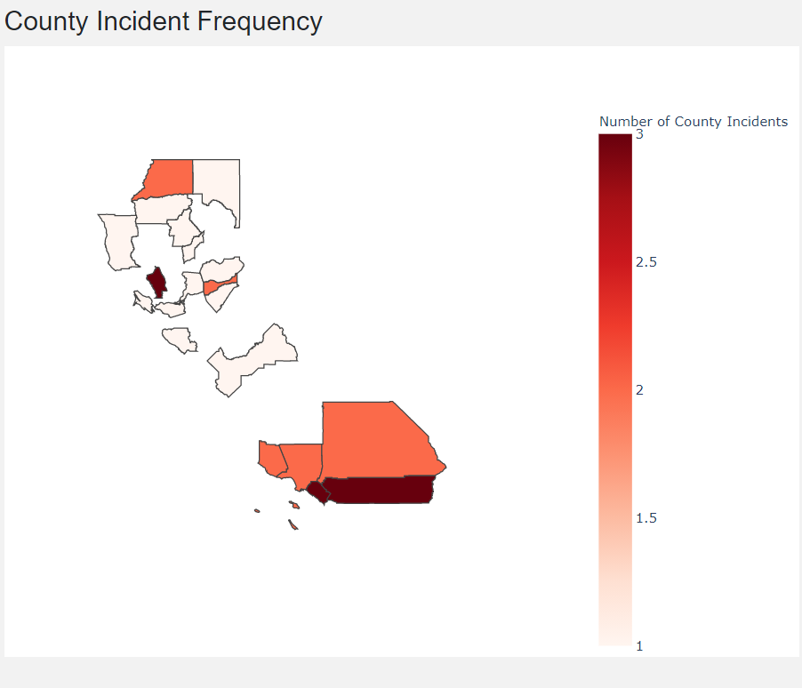

County Incident Map¶
While the California Incident Map gives a very intuitive, high-level, visual idea about how the fire incidents are in the entire state of California, it is coarse in nature. If you want a finer look at the incidents and see how it is spread across county’s then this is the right place. This tool provide visuals for the user to inspect county incidents more closely.
How to use¶
Even for a new user the use of County Incident Map is very intuitive and very similar to California Incident Map. As the prompt suggests user simply need to select the filter the date range of interest. For example, if one selects: Start Date == 10/1/2020 and End Date == 01/22/2021 , the pie-chart indicating the county incident distribution is as given below.

Dashboard elements and the functions used¶
There are two dashboard elements in this tool. 1. County Incident Distribution. 2. County Incident Frequency.
1. County Incident Distribution¶
A pie chart which shows the county incident distribution. The front end and back end functions to implement this are as follows.
1.1 Update County Pie¶
- src.app.update_county_pie(start_date, end_date)[source]¶
This function is used in County Incident Map. It interacts with getCountyNumbersDF module in utils.py to get the data to be presented in a pie-chart.
- Input :
start_date end_date
- Return :
Pie-chart of county-wise incidents
Since, update_county_pie() uses getCountyNumbersDF() on the backend to get all the data needed to plot a pie-chart. Let us look at that function next.
1.2 Get County Numbers DataFrame¶
- src.utils.getCountyNumbersDF(data, start_date, end_date)[source]¶
Looks at the data between the start and end date specified by user and checks if any incident happened in that time period.
- Input :
- param data
the original dataframe from the Calfire csv
- type data
pandas DF
- param start_date
the start date which we are filtering by
- type start_date
datetime object
- param end_date
the end date which we are filtering by
- type end_date
datetime object
- Return :
Pandas dataframe with county incident numbers from a specific date range
2. County Incident Frequency¶
To get a visual sense of how prone county’s are to fire in the specified range we also see the county incident frequency. It is basically a california county wise map of all county’s which had at least 1 fire incident in the specified date range. Continuing our example- for the dates chosen by us, the output was as follows,
{kind=link}
As you can see, some of the county’s are dark red in colour implying that the number of incidents are as high as 3, while some county’s are white indicating the number of incidents being as low as 1. The function used to implement this is update_county_map()
2.1 Update County Map¶
- src.app.update_county_map(start_date, end_date)[source]¶
This function interacts with getCountyNumbersDF() function in utils.py to Input :
start_date end_date
- Return :
Updated county based map
Similar to update_county_pie this function also interacts with getCountyNumbersDF on the backend to get the required dataframe. The function signature for the same can be found here